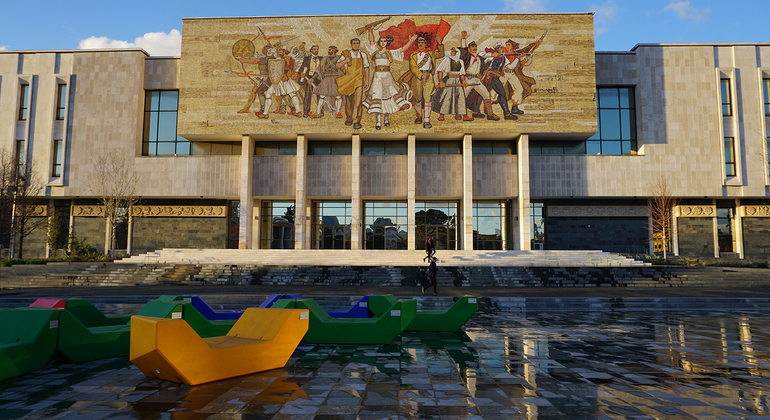

|  |
It is not easy to describe Tirana in a few words. Descriptions such as “a vibrant city”, “colorful city”are merely an attempt to give some sort of impression of the culture, passion and enjoyment to be found in the city.Whether it is a visit in one of the attractions, museums and surrounding castles or an evening at clubs and bars in the mosttrendiest parts of the city, allow yourself to be inspired by the joys that await you in Tirana. We hope you have a fantastic time here in Tirana.
|
|
Monument Skanderbeg in Skanderbeg Square has been regarded for more than half a century as the very centre of Tirana. The square that bears his name is a meeting place for all Albanians. It is the place where many of the most important cultural sites of Tirana and Albania are located—the National Museum, the Clock Tower, Et’hem Bey Mosque, Palace of Culture, National Library, Theatre of Opera and Ballet, and Bank of Albania—while at his back are lined up most of the government buildings. Albanians live.The square has more than 100 fountains with fresh water, to keep the place cool during the hot summer. . Mini- parks, benches, flowers, platforms for taking photos or altar for getting married, are part of the square. There are 32 square meters planted with different aromatic trees and 90 000 square meters walking area, while the underground parking can allow about up to 300. |
Palace of Brigades Many of you have heard about the Presidential Palace in Tirana, the former Royal Palace and nowadays known as “Palace of Brigades”. The Royal Palace is open for the public only in weekends. The Royal Garden is truly amazing with big trees, colorful flowers and statues. Architecturally, the Palace belongs to a Rationalism style. It is unique in its genre, not only in the country but in the wider sphere of Fascist architecture, including in Italy itself. The Royal Palace is surrounded by trees for nearly 200 meters. The gardens are decorated in patterns and shapes of various designs. The Royal Park has an area of 74 ha. In various areas there are fountains, sculpture gallery, tree-lined gardens, spiral-shaped flowers and labyrinths, flower garden and forest path. Also there are many sculptures, not all in good shape, which require an immediate restoration. The importance of this buildings stays in the fact that it resisted all the people’s interference. The woods are more than 80 years old, the same for other plants in the garden. We would prefer to see there a guide, to show us all the history and the importance of everything hidden here. Probably the best way to visit this palace is to guide visitors and not let them wandering in the garden and everywhere. |
The Cloud is an art installation placed in front of National Gallery of Arts in Tirana, Albania. Since 2016, the Cloud has served as modern art space for cultural events in Tirana. The Pavilion is a delicate, three-dimensional structure; each unit comprises fine steel bars of 800 and 400 mm rectangles. It forms a semi-transparent, irregular canopy, simultaneously protecting visitors from the elements while allowing them to remain part of the landscape. The footprint of the structure is 350 square-metres and the Pavilion has two entrances. A series of stepped terraces provide seating areas that allow the Pavilion to be used as a flexible, multi-purpose social space. The delicate quality of the structure, enhanced by its semi-transparency, creates a geometric, cloud-like form, as if it were mist rising from the undulations of the park. |
|
Arena Center is a new authentic and modern experience that includes everything in one place in the heart of Tirana. It is one of the most interesting and modern buildings is Arena Center, part of the New National Stadium Complex "Air Albania Stadium" . Near Mother Teresa Square, stands Arena Center one of the tallest and most magnificent a giant red and black complex, with the colors of Albanian flag. This area has already become the trendiest corner of Tirana, not only for the largest Albanian stadium and its history and importance, but also for the whole pleasant surrounding complex from the famous columns of the Museum building. |
The Pyramid It is absolutely an important tourist attraction. As a symbol of a notorious communism, it resisted some attempts to be destroyed by previous governments. But it is still there, unrestored, a symbol of the mixed and contradictory history of Tirana. It was inaugurated on October 14, 1988, as the mausoleum of the dictator, Enver Hoxha. The pyramid form was designed by a group of architects led by the daughter and son-in-law of the dictator. Construction began in 1986 and ended in 1988. It did indeed serve as a mausoleum for Hoxha, until 1991, after which it became a conference and fair centre. It is not a museum and you can walk around outside it any time of day or night. You can even climb to the top of it. Many children use it as a slide. |
Postblloku (Checkpoint), the Memorial to Communist Isolation, commemorates the country’s political prisoners who suffered under the Hoxha regime. It is situated on the main boulevard opposite the government building. Co-created by the writer and former dissident Fatos Lubonja and the artist Ardian Isufi, the monument is made up of three main elements including one of the small concrete defensive bunkers that litter the country, several concrete supports from the mine at the notorious Spaç labour camp where thousands of political prisoners suffered between 1968 and 1990 and a brightly painted section of the Berlin Wall from Postdamer Platz that once split Germany in two. . |